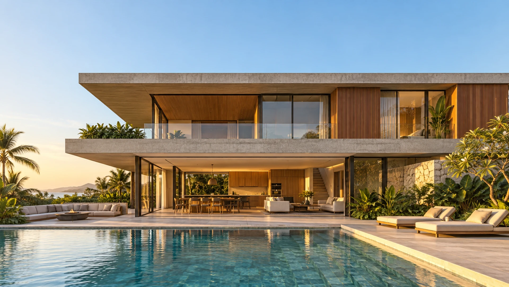
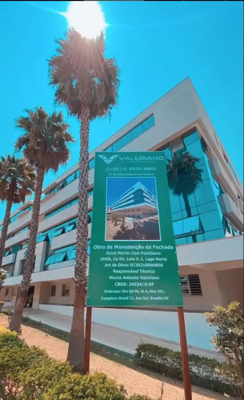
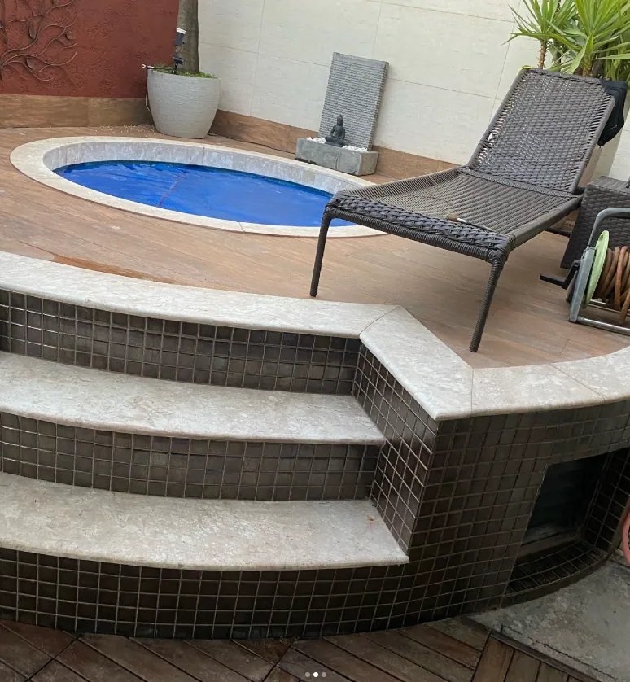
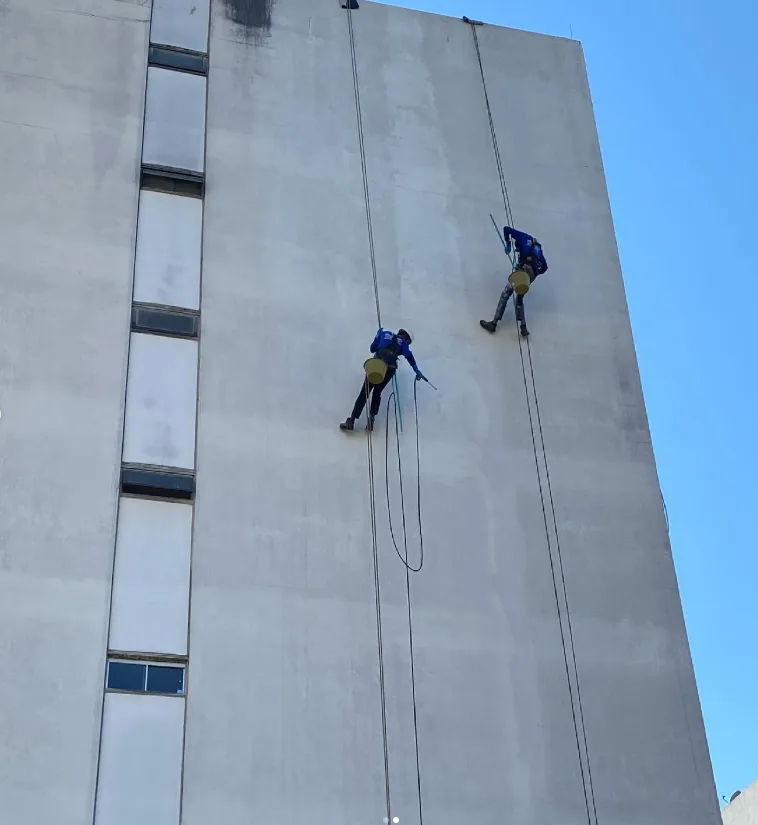
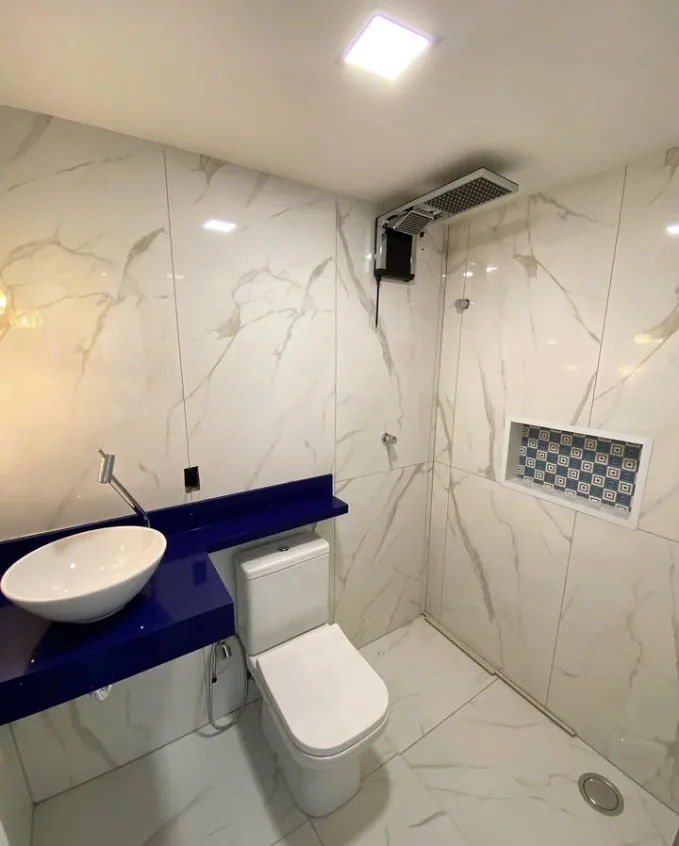
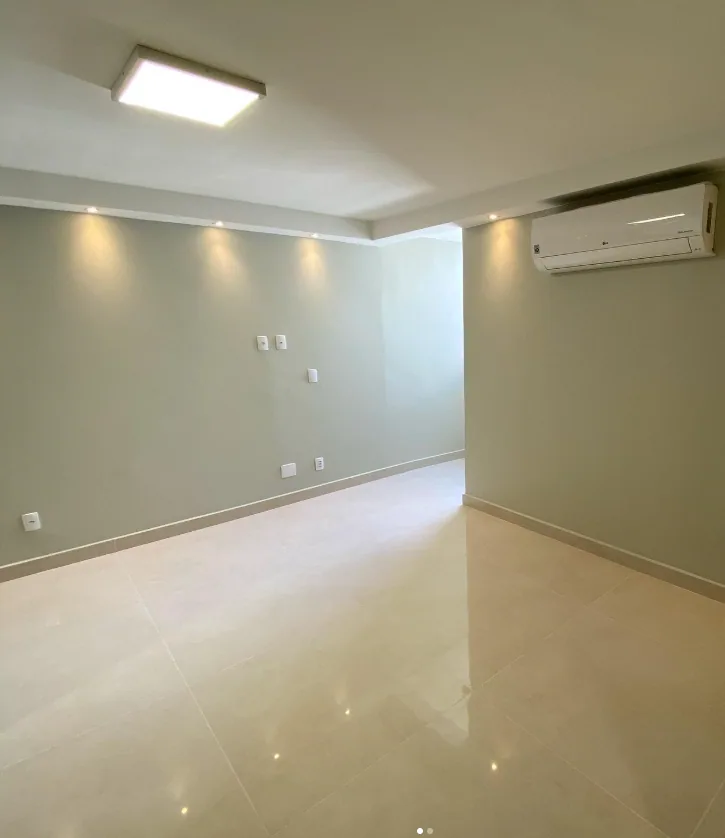

Construções e reformas
Construção residencial, comercial e industrial. Projetos, execução e transformação de espaços.
Conversar sobre minha obra
CONSTRUTORA · BRASÍLIA, DF
Construção e engenharia para transformar
o espaço onde a sua vida acontece.
Engenharia para
construir com confiança.
Atendimento personalizado
em Brasília, DF.
Somos a Valeriano Construtora, de Brasília. Reunimos serviços de construção civil e acompanhamento técnico para transformar planos em espaços que fazem sentido para você.
Ouvimos suas necessidades e alinhamos objetivos, custos e prazos. Um relacionamento próximo, com atenção a cada etapa.
Conte com a nossa equipeAcompanhamento personalizado para o seu projeto.
Metas e prazos alinhados desde o início.
Equipe capacitada para cada desafio da obra.
Do novo espaço à manutenção do que já existe.
Encontre o suporte que sua obra precisa.
Construção residencial, comercial e industrial. Projetos, execução e transformação de espaços.
Conversar sobre minha obraElaboração de projetos, levantamento de custos, gerenciamento e fiscalização da execução.
Planejar meu projetoManutenções preventivas e corretivas, impermeabilização e cuidado com a edificação.
Cuidar do meu imóvelAvaliação de edificações, pareceres técnicos e assessoria para condomínios.
Solicitar avaliaçãoDe fachadas a ambientes internos.
Conheça alguns registros das nossas obras.

Manutenção de fachada · Lago Norte, Brasília

Piscina e acabamentos da área de lazer

Registro de execução em fachada

Revestimentos e bancada de banheiro

Piso, iluminação e acabamentos internos
04 / CONFIANÇA QUE SE CONSTRÓI
13 avaliações no Google
Conheça as experiências compartilhadas por clientes da Valeriano Construtora.
Ver avaliações no Google05 / SEU PROJETO COMEÇA AQUI
Conte um pouco sobre o que você precisa.
A conversa começa direto no WhatsApp.
Visite nosso escritório
SHS Quadra 06, Bloco A, Sala 501
Centro Empresarial Brasil 21 · Brasília, DF
Horário de atendimento
Segunda a sexta, das 8h às 18h
06 / COMO CHEGAR
Segunda a sexta, das 8h às 18h
Ligar para o escritórioAbra a localização no Google Maps ou consulte a rota até o Brasil 21. Ao chegar, procure o Bloco A, sala 501.
Abrir no Google Maps Traçar rota até o escritórioAbre o Google Maps em uma nova aba ou no aplicativo.